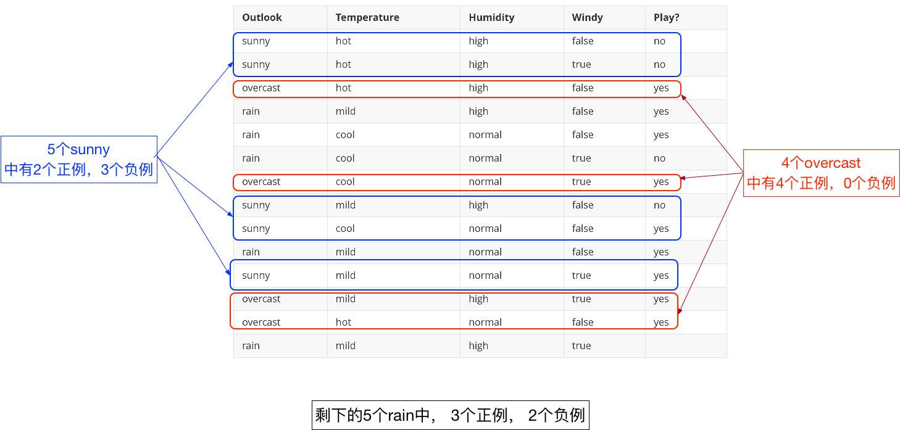
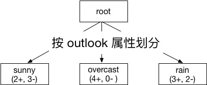
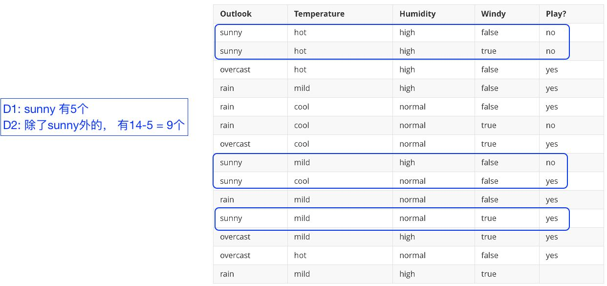
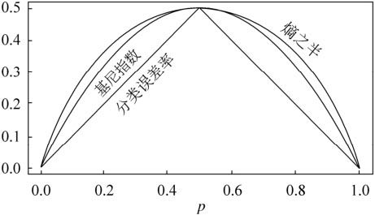

|
|
☰ 目录
20180827信息增益_信息增益率_Gini决策树算法的人都知道ID3以及C4.5两种算法，当然也非常清楚信息增益以及信息增益率两个概念。 回正题了，这三个指标均是决策树用来划分属性的时候用到的，其中信息增益（Info Gain）用于ID3，Gini用于CART，信息增益率（Info Gain Ratio）用于C4.5。提到前两个指标的计算时，首先要讲到的是关于熵（Entropy）的计算。
C4.5继承了ID3的优点，并改进了： （1）使用信息增益率来选择属性，克服了用信息增益选择属性时偏向特征值多的不足； （2）在构树过程中进行剪枝； （3）能够完成对连续属性的离散化处理； (4）能够对不完整数据进行处理； 熵(Entropy)理论上来说用于决策树的属性选择函数，为方便计算，往往是定义为其属性的不纯性度量，那么必须满足如下三个条件：
而熵（Entropy）能够满足以上三点特性。熵（Entropy）是由“信息论之父”香农提出的，更多的各种历史、数学理论请查看参考[1]。接下来，看看熵的计算公式如下： $$ Entropy(s) = -p_{+}log_2{p_{+}} - p_{-}log_2{p_{-}} $$ 其实，熵也可以用另外一种意思来解释：
可以简单的理解为“熵”描述了用来预测的信息位数。接下来看个例子： 如下表所述的天气数据，学习目标是预测Play or not play? 天气预报数据集例子
共14个实例，9个正例（yes），5个负例（no）。 熵的计算$$E(S) = info([9, 5]) = -\frac{9}{14}log_2{\frac{9}{14}} - \frac{5}{14}log_2{\frac{5}{14}} = 0.940$$ 条件熵根据条件熵的定义,分类系统中的条件熵指的是当样本的某一特征X固定时的信息熵。由于该特征X可能的取值会有（x1，x2，……，xn），当计算条件而需要把它固定的时候，每一种可能都要固定一下，然后求统计期望。因此样本特征X取值为xi的概率是Pi，该特征被固定为值xi时的条件信息熵就是H(C|X=xi)，那么 ，H(C|X)就是分类系统中特征X被固定时的条件熵（X=（x1，x2，……，xn））： 信息增益定义： $Gain(S, A) = E(S) - E(S|A)$ 按名称来理解的话，就是前后信息的差值，在决策树分类问题中，即就是决策树在进行属性选择划分前和划分后的信息差值， 通过对outlook属性来划分，有{sunny,overcast,rain}三个类别，个数分别为5,4,5；  选择 outlook 这个属性后， 分别计算其子树的基尼系数：  $E(S_{sunny}) = info([2,3]) = -\frac{2}{5}log_2{\frac{2}{5}} - -\frac{3}{5}log_2{\frac{3}{5}} = 0.97 = I(p_1, n_1)$ $E(S_{overcast}) = info([4,0]) = -\frac{4}{4}log_2{\frac{4}{4}} - -\frac{0}{4}log_2{\frac{0}{4}} = 0 = I(p_2, n_2)$ $E(S_{rain}) = info([3,2]) = -\frac{3}{5}log_2{\frac{3}{5}} - -\frac{2}{5}log_2{\frac{2}{5}} = 0.971 = I(p_3, n_3)$ 故outlook的期望信息为： $E(outlook) = E(S|A) = \frac{5}{14}I(p_1, n_1) + \frac{4}{14}I(p_2, n_2) + \frac{5}{14}I(p_3, n_3) = 0.694$ 其中， $I$ 前面的系数代表的是各个类别分别占总类的百分比； 那么信息增益由 $Gain(S, A) = E(S) - E(S|A)$, 可得 $Gain(S, outlook) = E(S) - E(S|A) = 0.940 - 0.694 = 0.246 $ 上面只是举如果按照outlook 划分算得的信息增益， 那么如果按照Temperature 、 Humidity、 Windy 划分呢？ $Gain(S, Temperature) = 0.029$ $Gain(S, Humidity) = 0.151$ $Gain(S, Windy) = 0.048$ 选择最大的信息增益属性进行划分，然后再重复进行上述步骤，直至建好一棵树为止；在本例中第一个分支节点的属性是outlook； 信息增益率1- 定义： $$Gain_{ratio} = \frac{Gain(S, A)}{I(S, A)}$$ 其中， $Gain(S, A)$ 为按A划分时的信息增益， $I(S, A)$ 为按A划分的分裂信息度量。 由 信息增益 计算得 $Gain(S, outlook) = 0.246$, $I(S, outlook) = info([5, 4, 5]) = -\frac{5}{14}log_2{\frac{5}{14}} -\frac{4}{14}log_2{\frac{4}{14}} - \frac{5}{14}log_2{\frac{5}{14}} = 1.5774$ 所以， $Gain_{ratio}(outlook) = \frac{0.246}{1.5774} = 0.15595$ 2- 同理，可得 $Gain_{ratio}(Temperature) = 0.01863 $ $Gain_{ratio}(Humidity) = 0.151 $ $Gain_{ratio}(Windy) = 00487$ Gini但是无论是ID3还是C4.5,都是基于信息论的熵模型的，这里面会涉及大量的对数运算（为了避免这个问题）。能不能简化模型同时也不至于完全丢失熵模型的优点呢？有！CART分类树算法使用基尼系数来代替信息增益比，基尼系数代表了模型的不纯度，基尼系数越小，则不纯度越低（纯度越高），特征越好。这和信息增益(比)是相反的。 具体的，在分类问题中，假设有K个类别(如上面的天气只有两类， Play = (Yes, No))，第k个类别的概率为$p_k$, 则基尼系数的表达式为： $$Gini(p) = \sum_{k=1}^{K} p_{k}(1- p_{k}) = 1- \sum_{k=1}^{K} (p_k)^2$$ 如果是二类分类问题，计算就更加简单了，如果属于第一个样本输出的概率是p，则基尼系数的表达式为： $$Gini(p) = 1- \sum_{k=1}^{K} (p_k)^2 = 1- (p^2 + (1-p)^2) = 2p - 2p^2 = 2p(1-p)$$ 对于个给定的样本D,假设有K个类别, 第k个类别的数量为$C_k$ (如上，yes 有9个， no 有5个),则样本D的基尼系数表达式为： $$Gini(D) = 1- \sum_{k=1}^{K} (\frac{|C_k|}{|D|})^2$$ 条件Gini1- 特别的，对于样本D,如果根据特征A的某个值a,把D分成D1和D2两部分（如上，根据outlook 的不同属性可以将D分成 Sunny , Overcat, rain 三个部分, 但其实有在计算每个基尼系数的时候，D1 代表的是sunny， D2 代表的是其它） 【类别是按结果分类的，如上分成 K类； 根据属性时把样本划分成几个子样本，如根据overlook 的属性可分为三部分】，则在特征A的条件下，D的基尼系数表达式为：  $$Gini(D, A) = \frac{|D1|}{|D|}Gini(D1) + \frac{|D2|}{|D|}Gini(D2)$$ 2- 那么根据 outlook 属性， 算出的基尼系数为： $$Gini(D, A=sunny) = \frac{5}{14}Gini(D_{sunny}) + \frac{9}{14}Gini(D_{others}) $$ 其中， $Gini(D_{sunny}) = 1- ((\frac{2}{5})^2 + ((\frac{3}{5})^2 ) = 0.48$ , $Gini(D_{others}) = 1- ((\frac{7}{9})^2 + ((\frac{2}{9})^2 ) = 0.3457$ , 所以， $Gini(D, A=sunny) = \frac{5}{14}\times 0.48 + \frac{9}{14}\times0.3457 = 0.3937 $ 3- 同理，可以计算得， $$Gini(D, A=overcat) = \frac{4}{14}Gini(D_{overcat}) + \frac{10}{14}Gini(D_{others}) = \frac{4}{14}(1- ( (\frac{4}{4})^2 ) + ((\frac{0}{4})^2) ) + \frac{10}{14}(1- ( (\frac{5}{10})^2 ) + ((\frac{5}{10})^2) ) = 0.3571$$ $$Gini(D, A=rain) = \frac{5}{14}Gini(D_{rain}) + \frac{9}{14}Gini(D_{others}) = \frac{5}{14}(1- ( (\frac{3}{5})^2 ) + ((\frac{2}{5})^2) ) + \frac{9}{14}(1- ( (\frac{6}{9})^2 ) + ((\frac{3}{9})^2) ) = 0.2857$$ 4- 如果A 代表的是特征outlook的话， 那么用B、C、D 分别代表Temperature, Humitidy、Windy 四个特征。 计算出$Gini(D, B = hot)$ 、$Gini(D, B = mild)$ 、 $Gini(D, B = cold)$ ; $Gini(D, C = high)$ 、$Gini(D, C = normal)$ ; $Gini(D, D = true)$ 、$Gini(D, D = false)$ ; 4- 在所有10个基尼系数中（A(3) + B(3) + C(2) + D(2) = 10） 选出最小的基尼系数作为切分点； 打个比方， $Gini(D, A=rain)$ 最小， 则 rain 作为一个最优切分点， 然后在 B、C、D中选出下一个最优划分点。 ……. 依次类推。 可以比较下基尼系数表达式和熵模型的表达式，二次运算是不是比对数简单很多？尤其是二类分类的计算，更加简单。但是简单归简单，和熵模型的度量方式比，基尼系数对应的误差有多大呢？对于二类分类，基尼系数和熵之半的曲线如下： 概率p是划分为正类的概率， 如上例， 判断天气为 Yes 或 No。 如果 $p = 0.5$ 就是各占一半，最难划分的情形。  从上图可以看出，基尼系数和熵之半的曲线非常接近，仅仅在45度角附近误差稍大。因此，基尼系数可以做为熵模型的一个近似替代。而CART分类树算法就是使用的基尼系数来选择决策树的特征。同时，为了进一步简化，CART分类树算法每次仅仅对某个特征的值进行二分，而不是多分，这样CART分类树算法建立起来的是二叉树，而不是多叉树。这样一可以进一步简化基尼系数的计算，二可以建立一个更加优雅的二叉树模型。 参考1- https://blog.csdn.net/Txiaomiao/article/details/50219817 |